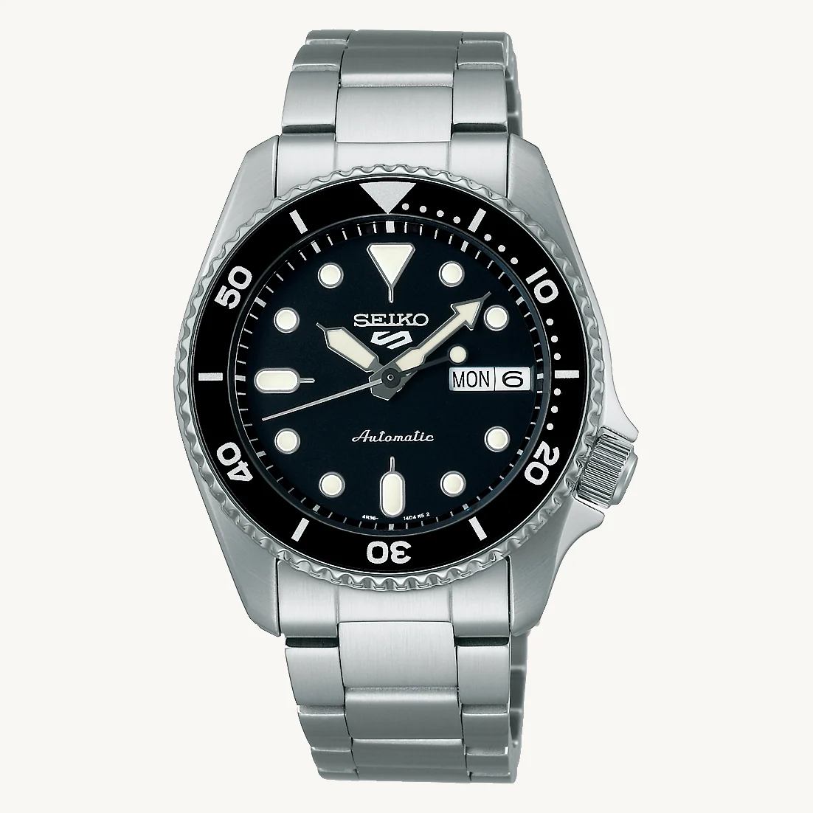

SKMEI · NUMÉRIQUE
SKMEI 2056
Un format rétro compact avec rétroéclairage, minuteur et double fuseau horaire documentés par le vendeur.
Voir les modèles SKMEI ↗ATELIER MONTRES · SÉLECTION 2026
Du digital accessible à l'automatique de caractère : explorez 52 montres de marques identifiées. Des photos des références et des caractéristiques documentées pour comparer les styles avant de choisir.
Sélection éditoriale multimarque. Les achats proposés par lien externe se concluent chez le vendeur concerné. Aucune commande n'est encore acceptée sur Atelier Montres. Les paiements directs ne sont pas ouverts.

TROIS FAÇONS DE CHOISIR
Plutôt rétro, mécanique ou sportif ? Retrouvez les modèles concernés dans le catalogue complet, sans prix ni stock inventés.


SÉLECTION MULTIMARQUE
Une sélection de modèles identifiés, présentés ici pour comparer leur esthétique. Les prix, les variantes et la disponibilité sont à confirmer chez le vendeur.
Un format rétro compact avec rétroéclairage, minuteur et double fuseau horaire documentés par le vendeur.
Voir les modèles SKMEI ↗
Un cadran expressif et une silhouette sobre pour explorer une alternative accessible.
Découvrir ADDIESDIVE ↗
Un chronographe de la collection Prospex, aux compteurs lisibles et à l'esprit sportif.
Explorer les montres Seiko ↗ACHAT & TRANSPARENCE
AUJOURD'HUI
Les montres de notre sélection éditoriale peuvent renvoyer vers les sites des fabricants ou de marchands tiers. Les tarifs, les stocks, les frais, le paiement et le suivi dépendent du vendeur choisi. Les liens rémunérés sont indiqués à proximité des offres concernées.
Comprendre les liens partenaires ↗EN PRÉPARATION
Nous préparons un parcours avec paiement sécurisé et commande fournisseur automatisée pour certaines références seulement. Il restera indisponible tant que fournisseur, prix TTC, conformité, retours et livraison n'auront pas été vérifiés. Aucune expédition depuis la France n'est garantie à ce stade.
État du parcours d'achat direct ↗Notre démarche
La collection réunit 52 références documentées. Nous séparons les caractéristiques publiées par les fabricants, les informations restant à vérifier et les conditions commerciales des vendeurs. Une fiche informative n'est pas une promesse de disponibilité.
Notre approche
Parcourez les 52 modèles selon la marque, le style, le mouvement ou les dimensions documentées.
Retrouvez les caractéristiques et les fiches fabricant. Utilisez notre conseiller pour affiner votre choix.
Avant tout achat externe, confirmez la bonne variante, le prix final, la livraison et les conditions du vendeur.
Questions fréquentes
Vous pouvez consulter notre sélection de 52 montres et suivre les liens identifiés vers des vendeurs externes. Le paiement se fait alors chez ces vendeurs, selon leurs conditions. L'achat directement sur Atelier Montres n'est pas encore disponible.
Le catalogue éditorial réunit 52 références de marques telles que SKMEI, Casio, Citizen, ADDIESDIVE, Pagani Design, Seiko et d'autres. Les prix et disponibilités ne sont pas garantis par notre site ; vérifiez-les auprès du vendeur.
Aucune origine d'expédition n'est garantie par Atelier Montres à ce stade. Pour une commande chez un marchand partenaire, le lieu d'envoi, les frais et les délais dépendent de celui-ci. Pour le futur achat direct, nous publierons l'origine et les conditions vérifiées avant ouverture.
Les ventes à distance aux consommateurs bénéficient en principe d'un droit de rétractation de 14 jours, avec des exceptions réglementées, ainsi que des garanties légales applicables. Les modalités complètes seront indiquées à l'ouverture.
Mesurez votre tour de poignet avec un mètre souple. Le catalogue indique les dimensions publiées lorsque disponibles ; consultez la fiche du fabricant pour les variantes et le réglage du bracelet.
La newsletter sera activée après configuration de son formulaire avec confirmation d'inscription. Aucun courriel n'est collecté par cette vitrine tant que le formulaire n'est pas disponible.
Atelier Montres
52 références à explorer dès maintenant, des achats auprès des vendeurs partenaires lorsqu’ils sont disponibles et un parcours de vente directe en préparation. Les informations légales et commerciales seront complétées avant toute vente effectuée par Atelier Montres.